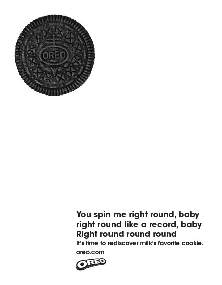
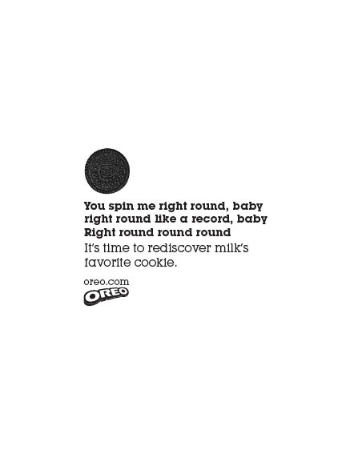
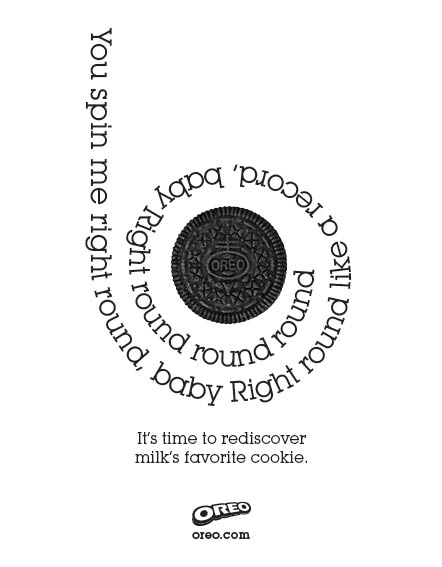
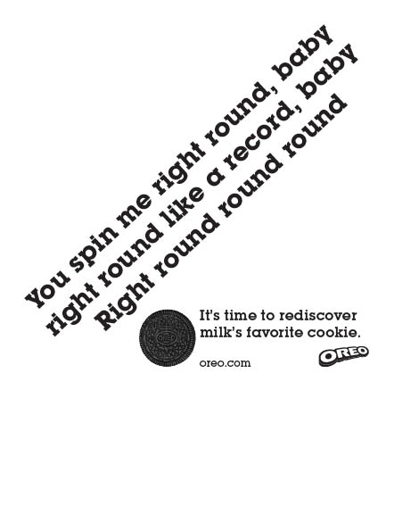
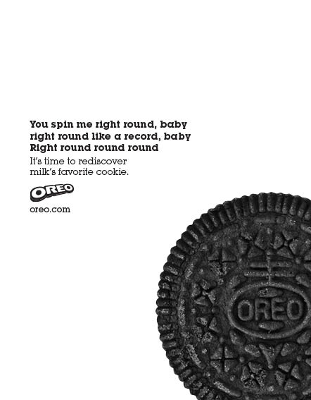
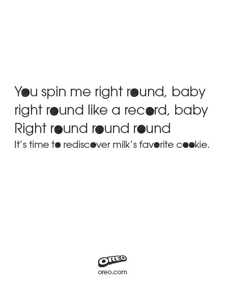
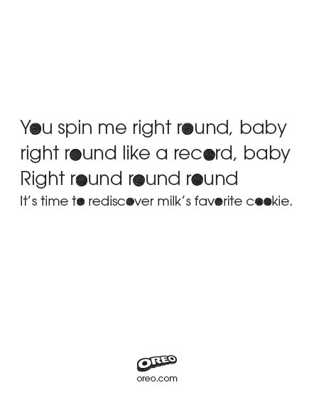
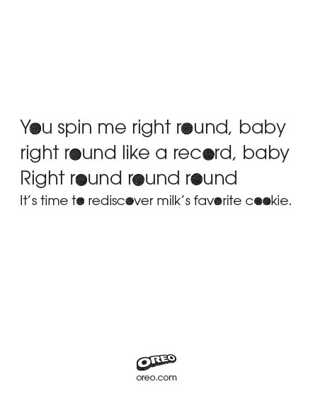

Oreo
Second brief is to design a print ad for Oreo cookies. To get us in the mood we were given an Oreo cookie at the start. Made me crave for more of them the rest of the afternoon. It was liberating not having to worry about how to code this. Not sure I would like to attempt it.
These are the designs that missed the cut.





 

